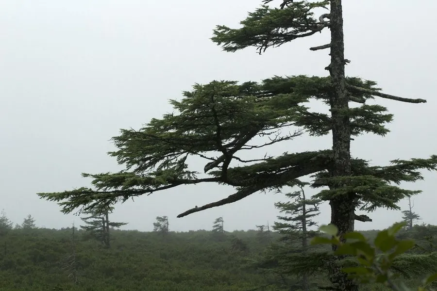

蕨类与裸子植物 · 植物界
落叶松 Larix gmelinii

落叶松是寒温带针叶林的主要树种，冬季落叶，树干通直，木材耐腐，是东北重要的用材与生态树种。
- 分类
- 门裸子植物门纲松纲目松柏目科松科属落叶松属
- 栖息环境
- 寒温带针叶林与山地，喜光耐寒，适应湿润酸性土壤
- 地理分布
- 中国东北大兴安岭、小兴安岭及东西伯利亚地区
- 保护级别
- 暂无评估；东北林区主要用材树种
物种志
落叶松是松科落叶乔木，高可达 30 m，树干通直，树皮灰褐色、纵裂。它是少数落叶的针叶树：叶片针状、柔软，长 1.5–3 cm，在长枝上单生、短枝上簇生，秋季变为金黄色后脱落。雌雄同株，球果卵形，成熟时淡黄褐色或紫褐色，种鳞背部有毛，种子具翅。
落叶松主要分布于寒温带与温带山地，是东西伯利亚、中国东北大兴安岭和小兴安岭针叶林的主要建群种之一，常与白桦、樟子松混生。它喜光、耐寒，能耐受 -50 ℃ 左右的低温，适应湿润、排水良好的酸性土壤。落叶松木材材质坚韧、耐腐朽，可用于建筑、枕木、电杆和造纸，树皮可提取栲胶。它是东北林区重要的用材与生态树种，落叶层的凋落物还能改良土壤。
形态与习性
- 树高可达 30 m
- 针叶落叶针叶树，秋季变黄脱落
- 球果卵形，种鳞背部有毛
- 耐寒性可耐约 -50 ℃ 的低温
- 用途建筑用材、枕木与造纸
- 生态东北针叶林的主要建群种
趣味知识
- 落叶松是少数会落叶的针叶树，秋天针叶变黄后整片脱落。
- 它非常耐寒，能忍受零下 50 ℃ 左右的严寒。
- 落叶松木材坚韧耐腐，是东北林区重要的建筑用材。